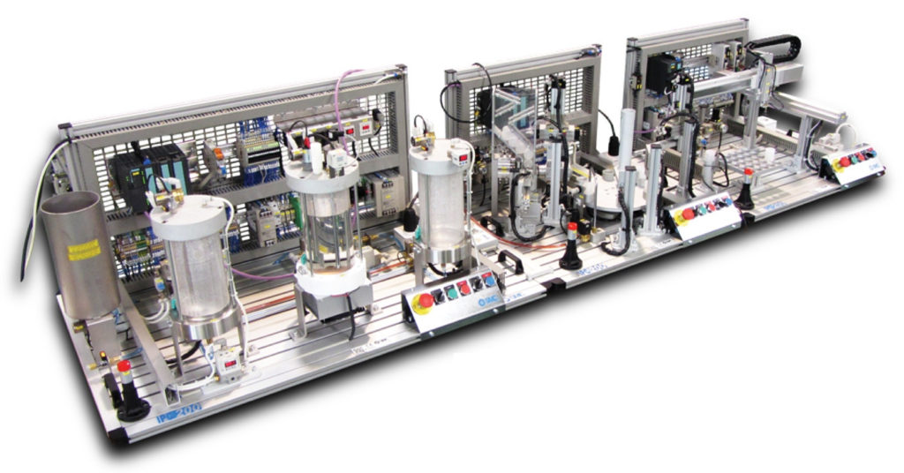

Contact
Email: Jaron.Igodt@Ugent.be
GSM: 0491 32 31 72
Sociale media


A website created by Jaron.
Het vatensysteem is een miniatuur fabriekje dat ontworpen is door SMC in Spanje om mensen te leren werken met industriële processen. In het systeem kunnen er verschillende foutmeldingen gegenereerd worden die de gebruiker van het systeem moet oplossen. Zo worden mensen klaargestoomd om verder te werken in de industrie met soortgelijke machines. Tijdens dit onderzoek kwamen veel problemen naar boven waarbij dan ook samengewerkt werd met externe firma's. Het systeem was jammerlijk niet meer te repareren met uitzondering van het aanbrengen van een nieuw besturingssysteem dat enkele duizenden euro's zou kosten. Hierdoor werd onze geintegreerde proef niet tot het gewenste resultaat gebracht. Het systeem bestaat uit 3 aparte systemen waarvan wij het eerste deel hadden op school dat we konden onderzoeken.
Voor we het systeem terug werkende gingen krijgen werd eerst een grondig onderzoek gedaan naar de werking van alle onderdelen. Zowel hardware als software werd behandeld. Alle schema's werden onderzocht zodat de werking van het systeem duidelijk zou zijn zodat het makkelijker zou zijn om het systeem opnieuw op te starten. In dit systeem zitten veel verschillende componenten, zo zat er PID-regeling, PLC en pneumatiek in verwerkt.
Email: Jaron.Igodt@Ugent.be
GSM: 0491 32 31 72